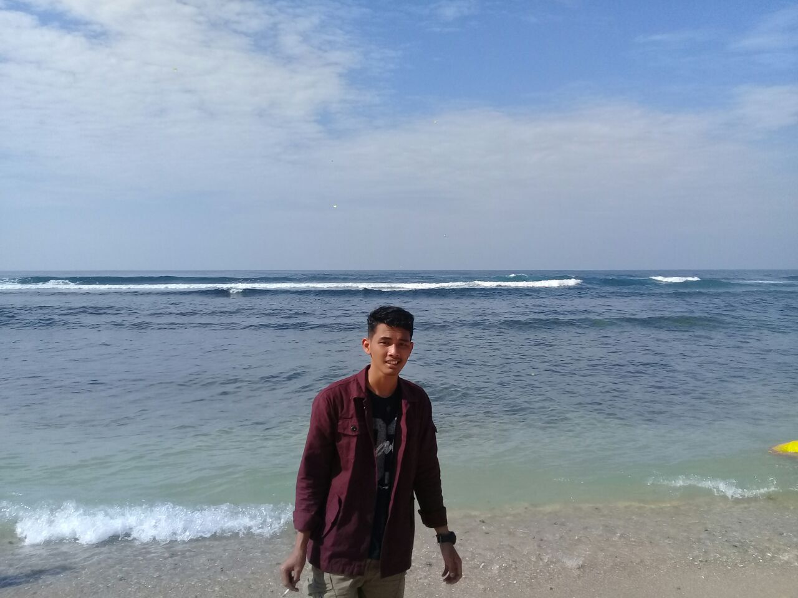

Profil
Generalis dengan latar belakang Teknik Informatika yang tertarik pada titik temu antara teknologi, kreativitas, dan problem-solving.

Generalis dengan latar belakang Teknik Informatika yang tertarik pada titik temu antara teknologi, kreativitas, dan problem-solving.
Mendokumentasikan proses, menguji hasil, dan membagikan apa yang berhasil maupun yang masih perlu diperbaiki.
Sampel mandiri dan catatan belajar — bukan klaim pekerjaan klien atau hasil komersial.
Terbuka untuk diskusi proyek, peluang kerja, kolaborasi, dan pertukaran ide.
Kirim email ↗